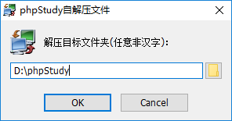
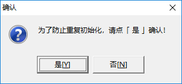
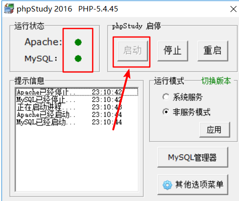
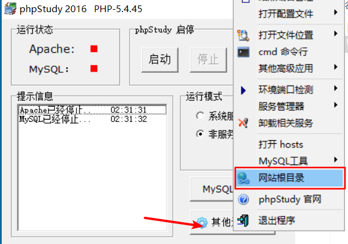
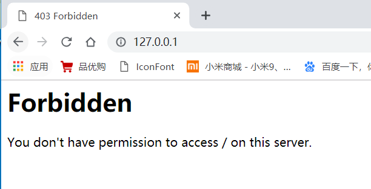
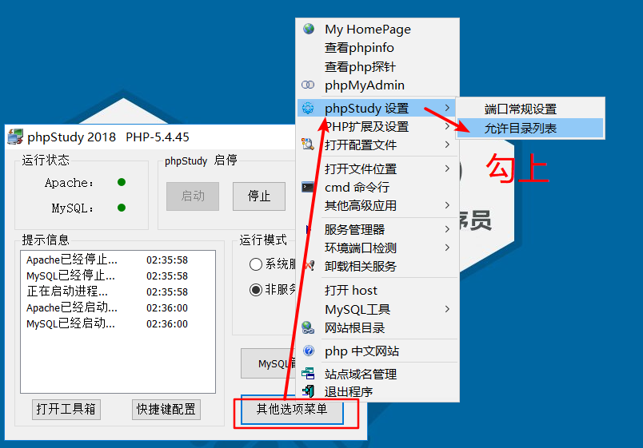

通过phpstudy把静态页面部署到web服务器
安装phpstudy，注意不能有中文路径
双击软件
选择安装目录（注意，要求路径中不能有中文！！！默认的路径即可）

点击ok之后，会默认跳转到phpstudy官网上，然后提示
为了防止重复初始化，选择是点击是即可！
启动服务器

然后可以访问自己本地的服务器，在地址栏中输入
127.0.0.1访问
把自己的网页放到www文件夹中，找到安装目录下面的www文件夹，把www原有的文件删除, 把自己写好的页面放到这个文件夹中去

默认会发现访问时, 会被拒绝

设置允许目录访问

通过查看自己的ip，通过浏览器输入ip地址访问自己写的网页
通过飞秋可以查看IP
win+r 输入cmd，往黑窗口中输入ipconfig，回车，以太网适配器查看192.168开头